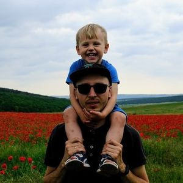

I am an experienced front-end developer who enjoys building modern UI using the latest in web technologies. I frequently leverage the React and Redux ecosystems (@redux-toolkit). I love styled-components, xstyled, tailwindcss.
Currently, I work at Kaspersky Lab on the Infrastructure Solutions & Services Development team.
I started my journey in Computer Science at the Russian Universilty of Transport (MIIT) in Moscow. The first programming languages that I learned were Turbo Pascal and Assembler. After graduation, I started working for a small company that created training programs for train drivers. We've used various technologies: Adobe Flash, Ogre3D, VR (when it first came into being). Next I started exploring .NET technologies such as ASP.NET, Windows Forms, WPF, SQL Server, etc. I worked as a back-end developer for several years. Then I started to get interested in the front-end. At that time, the popular framework angular.js appeared, which blew everyone's minds. I decided to become a full-fledged front-end developer. Then came React. Since then it has been my go-to tool.
When I'm not working, I do my best to raise my son. I enjoy traveling and trying my hand at photography.